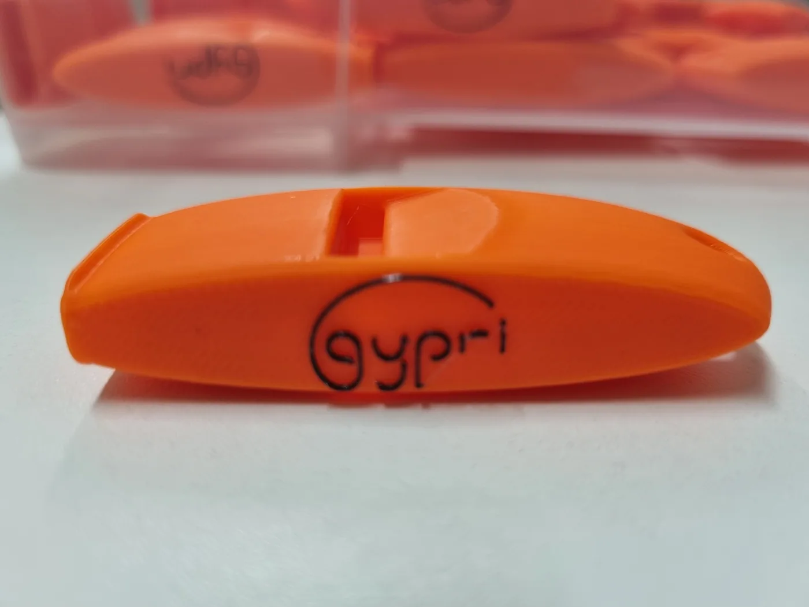
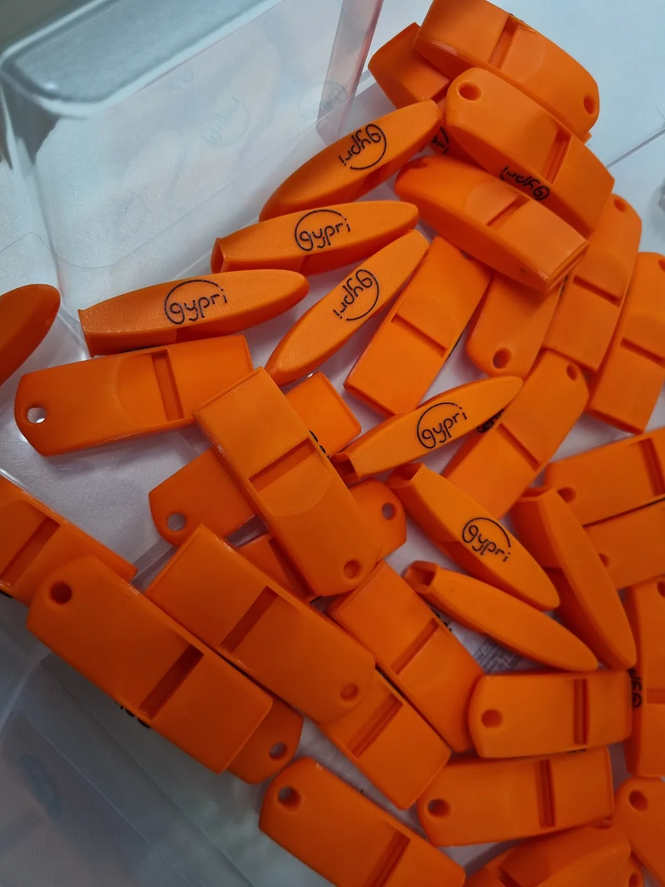
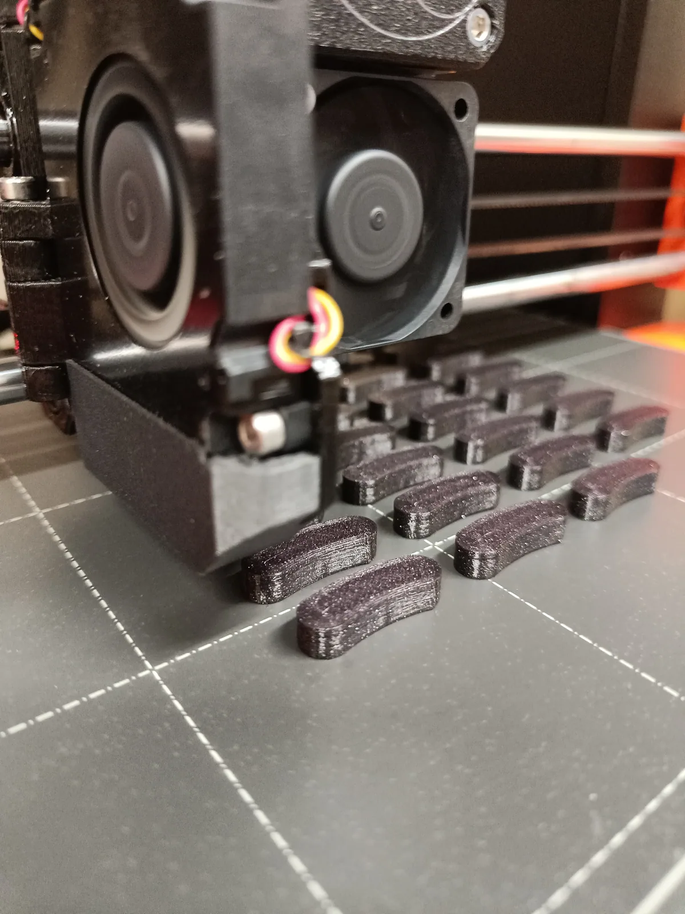
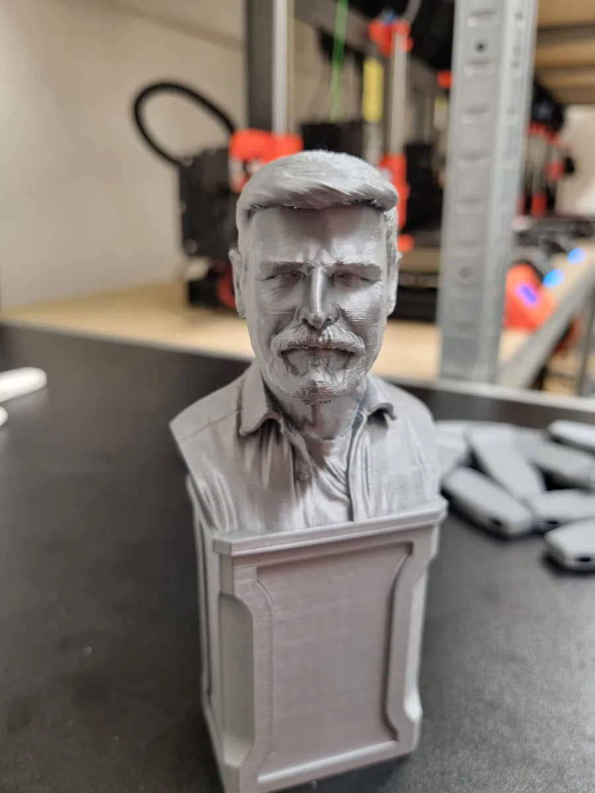
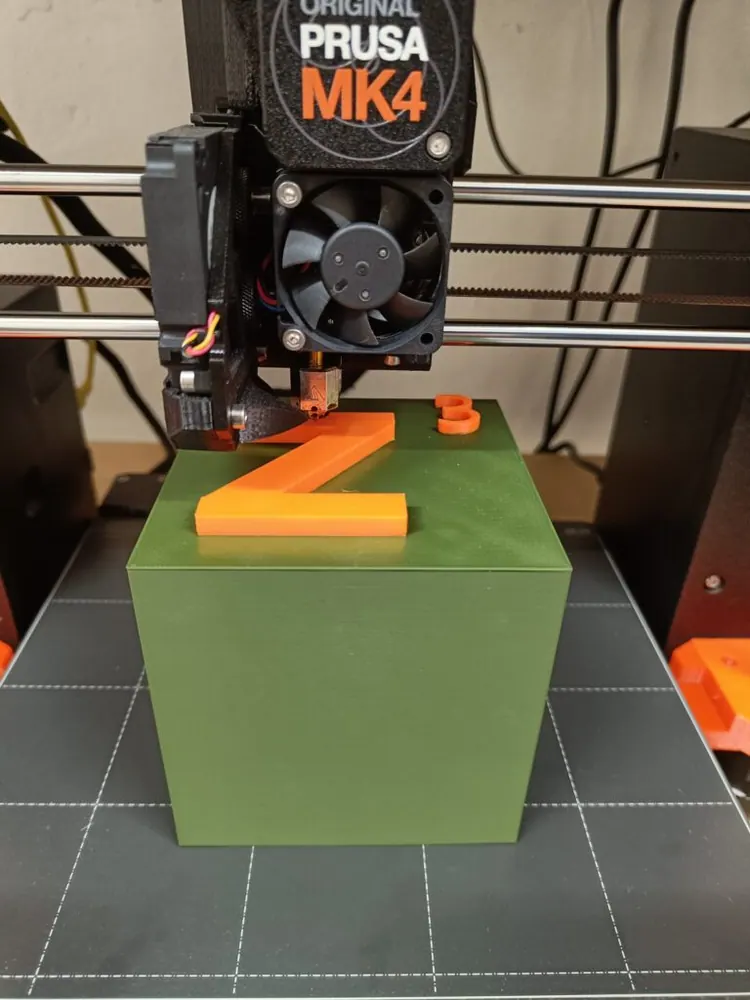
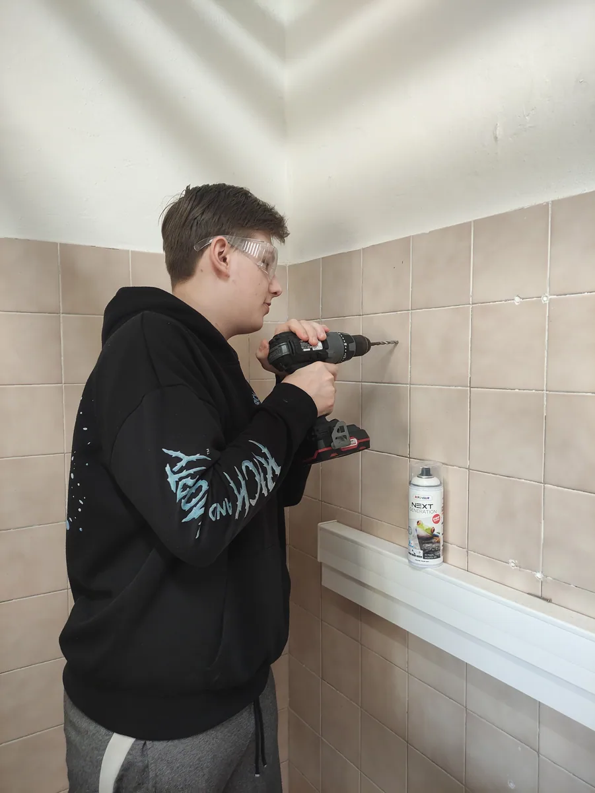
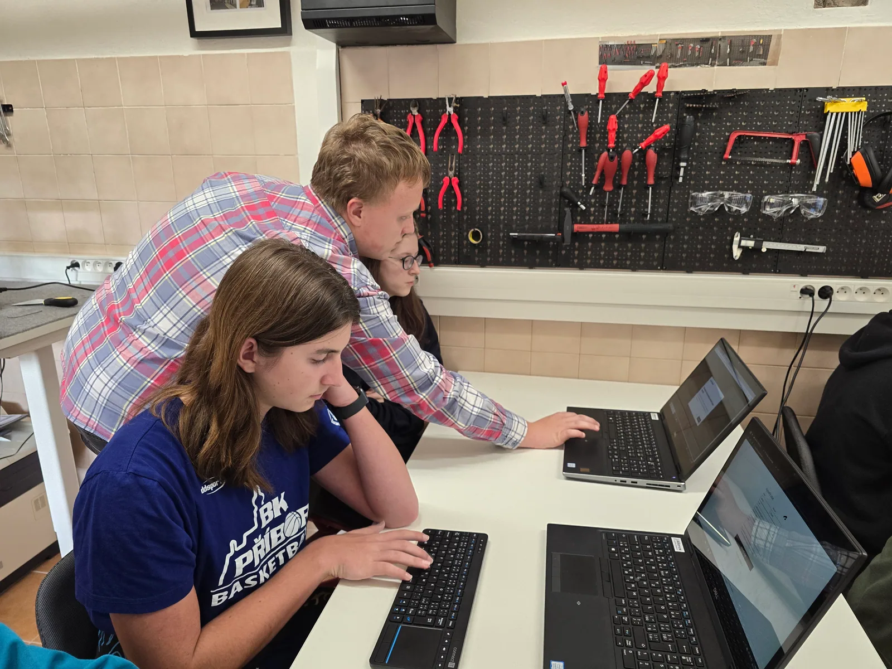
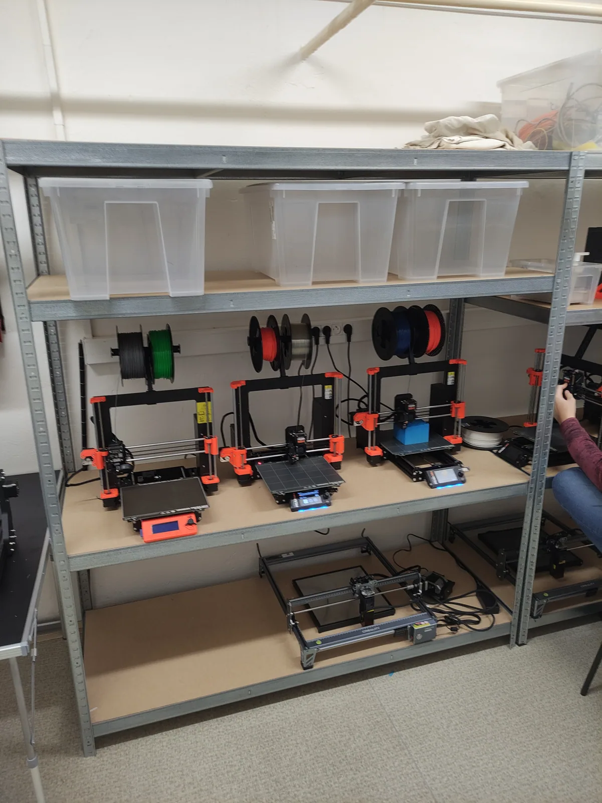

Naše práce
Z jedné místnosti v suterénu odešlo za pár let dost věcí: píšťalky do všech tříd, pomůcky do kabinetů, díly, které se nedají koupit, a součástky pro satelit CanSat. Tohle je jejich seznam.
Gypri píšťalky pro bezpečnost
Navrhli a vyrobili jsme 3D tištěné píšťalky pro mimořádné události a evakuaci školy. Celé je tiskneme sami.
Jsou umístěny za bezpečnostním sklíčkem v každé třídě, aby byly rychle dostupné a zároveň chráněné. Píšťalky slouží pedagogům k přivolání pomoci a koordinaci evakuace při nečekaných situacích a jsou součástí školního krizového postupu.

- Typ
- Bezpečnostní
- Pro mimořádné události a evakuaci školy
- Výroba
- 3D tisk
- Návrh, tisk i instalace proběhly v naší dílně
- Umístění
- Každá třída
- Za bezpečnostním sklíčkem, rychle dostupné
- Účel
- Přivolání pomoci
- Součást školního krizového postupu

Pomůcky pro výuku

Náš tým je schopen vytvořit jakoukoliv pomůcku do školy, kterou si jen dokážete představit.
Díky 3D tisku vyrábíme širokou škálu školních pomůcek na míru, od výukových modelů pro geometrii až po speciální komponenty pro projekty studentů. Zvládneme i technicky náročné zadání.
Vedle pomůcek vyrábíme také díly, které se běžně nedají sehnat. Mezi ně patří aretační díly na hlavové opěrky, držáky a kryty pro studentské projekty a prototypy, které postupně upravujeme až do hotové podoby.
Nechybí ani věci pro radost, jako je tahle busta vytažená z tiskárny jen proto, že nás zajímalo, jestli to půjde.

Jak zakázka probíhá
Podle zadání vymodelujeme díl a doladíme rozměry tak, aby seděl na místo, kam patří.
Tisk na některé ze sedmi tiskáren Prusa. U větších dílů kombinujeme tisk s CNC obráběním a ručním dokončením.
Hotový díl předáme a máme radost, když se rovnou nasadí do provozu ve škole nebo v projektu.




Díly pro CanSat
Tým IKAROS staví satelit velikosti plechovky. Konstrukční díly k němu vznikají tady, u stejných stolů, u kterých se přes přestávku pájí.
Tiskneme a obrábíme držáky, kryty a konstrukční prvky modulu. Elektroniku pájíme a oživujeme na místě, stejně jako u ostatních zakázek.
Soutěž hodnotí i to, jestli tým projekt dotáhne do konce.
Modul se musí vejít do přesně daných rozměrů a vydržet testy. Proto se každý díl po vytištění měří a upravuje, dokud nesedí.
Rádi vám pomůžeme
Neváhejte nás kontaktovat, pokud by se vám něco hodilo, třeba na nějaký projekt. Ozvat se můžete osobně v dílně nebo e-mailem.